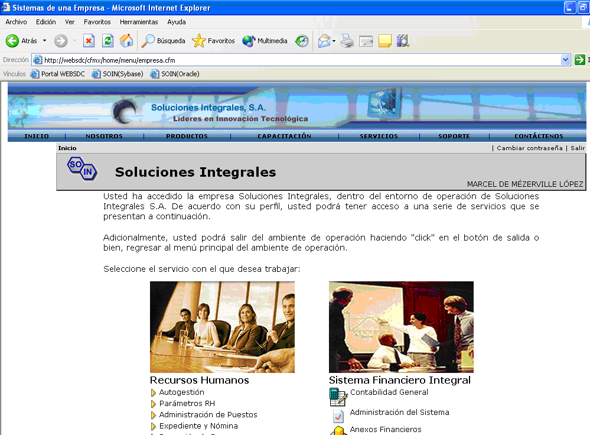
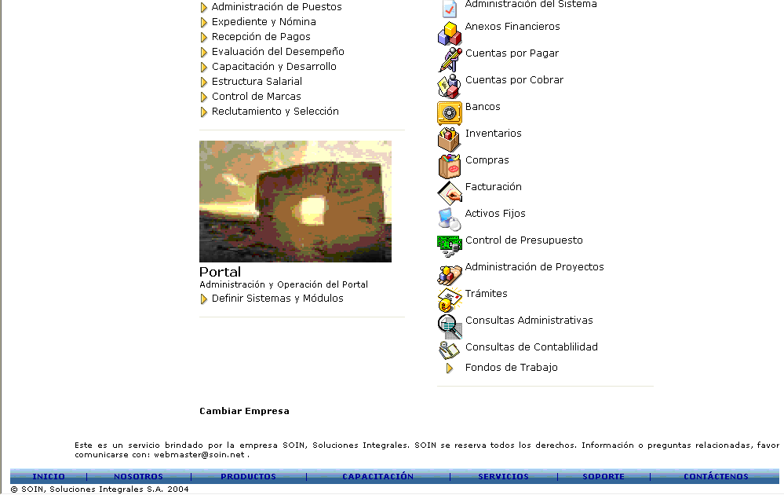

El Sistema Financiero Integral es un conjunto de programas que le sirven de apoyo a la operación de la empresa, de una forma fácil, eficiente y segura. Por medio del Sistema Financiero Integral el usuario podrá llevar un control Contable detallado sobre todas las operaciones que realice, podrá llevar un control de las facturas y documentos por cobrar o por pagar, así como administrar los compromisos a corto plazo, adelantos, pagos realizados o pendientes, documentos vencidos, así como una administración de su inventario y de los Clientes o Proveedores (Socios de Negocios). Podrá llevar un control detallado sobre los movimientos bancarios que realice, así como un control de los Activos que maneje su empresa.
El sistema además le permite configurar los reportes que necesite a su gusto, permitiéndole explotar la información para la mejor toma de decisiones.
Roles para Usuarios
Los roles que reciben este servicio son: Administrador de Empresa y Usuario de Empresa.
Los módulos que constituyen el Sistema Financiero Integral (SIF) son:
• Contabilidad General
• Cuentas por Cobrar
• Cuentas por Pagar
• Movimientos Bancarios
• Inventarios
• Tesorería
• Compras
• Activos Fijos
• Formatos de Reportes y de Impresión de Documentos
• Asistente de Configuración de Empresas.
Menú Principal SIF
Dentro del usuario de Administrador de Empresa o agente, para ingresar a las opciones haga click sobre los iconos o sobre el nombre de la palabra.


FIGURA 1. Menú Principal Sistema Financiero Integral